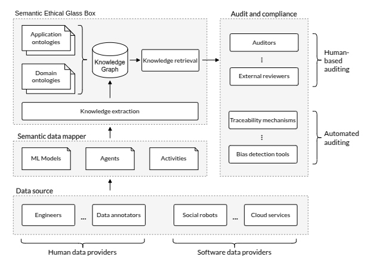

2. Introduction to SEGB¶
The Semantic Ethical Glass Box (SEGB) is a system designed to persisently store a global semantic registry of all in- teractions, decisions, or activities carried out by various Artificial Intelligence (AI)-based agents within a specific scenario or environment. The objective is allowing that these events can later be consulted to audit, analyze, and debug the agents’ behavior. Let’s break the name in order to better understand the concept:
Semantic: The SEGB stores all the events within a global knowledge graph, Resource Description Framework (RDF) to describe the information happened within the scenario. Using semantics gives place to a categorized, standarized and controlled modelling of the agents & avents existing in the scenario, offering some advantages such us 1) making advanced queries to the graph thanks to the well-defined meaningful relations and properties, or 2) extend from other standardized third-party ontologies for modelling our enviroment.
Ethical: The SEGB aims to provide insights in terms of AI interpretability & explainability, whose underlying complexity limits humans from understanding why an action was executed or how a decision was reasoned. But why are interpretability & explainability so important? This help us understand why an unexpected, harmful action or decision was carried out, with the objective of ensuring the fairness and ethics of AI-based agents. This is crucial for achiving a good reliability, which is specially remarkable in high accountability scenarios where the AI-based decisions can significatively affect people.
Glass: In order to ensure this reliability and interpretability, the SEGB enhances the concepts of transparency and traceability of registered events. Looking inside this glass box do allow auditor follow step by step what a AI-agent reasoned and excecuted in every moment.
Box: It represents a storage container where all the events produced by AI-based agents are joined and persistently saved, conforming the global registry.
The SEGB arises as part of the AMOR project, as it uses AI-based robots and imersive environments to interact with different groups of people, requiring these agents’ ethical behaviour in order to meet the objectives. This implies being able to explain and interpret why a decision/action was produced and ensuring the ethics and transparency of these agents’ behaviour.
Nevertheless, the SEGB is appliable to any scenario. as long as the AI-based agents has an Internet connection and the capability of generating TTL-formated logs.
2.1. Semantic model¶
The SEGB ontology can be found in:
and some examples in:
2.2. SEGB Pipeline¶
A pipeline representing the steps followed to get a semantic registry of all the occurred activities is defined in the image below. The first stage has to do with the data generation. The entries of the SEGB are published by software agents and humans participating within the scenario. In this context, humans are engineers who add information necessary to understand the scenario, namely the AI models and the software agents participating. Software agents are any technological entity executing one or several pieces of software to participate in the scenario (e.g. AI-based social robots) and are intended to periodically upload all their internally-generated TTL-formated log data to the SEGB to track every action occured.
{kind=link}
The SEGB keeps a registry of all these uploaded triples by joining them in a global knowledge graph, which contains all the events that happened within the specified scenario. Using semantic properties offers some advantages, such as making advanced queries to the graph thanks to the well-defined meaningful relations and properties, or using standardized third-party ontologies for modeling the information contained inside the SEGB. The semantic data mapping is the second step of the pipeline represented in the previous figure, which implies formatting the generated logs to RDF, i.e. Turtle (TTL).
The SEGB has a persistence system to store the global knowledge graph, which is intended to include registries from:
the AI-based models used;
the agents participating within the scenario; and
all the activities/events occurred, e.g., an interaction between a human user and a social robot.
AI models are mapped using the MlS ontology, while agents are modelled based on ORO and PROV, and activities do so by combining PROV and the SEGB ontology. The expected operation order is that humans first add both model and agent information -respectively- to the SEGB, and, once the scenario’s conditions are established within the graph, the agents start to post the activities information to the SEGB as they take place. The joining of the different received RDF into the global knowledge graph represents the third step in the pipeline.
Remarkably, the SEGB has a communication interface, which allows humans and software agents to interact with the graph and auditors to request the knowledge graph to audit some occurrences within the scenario. This is the last step of the pipeline.